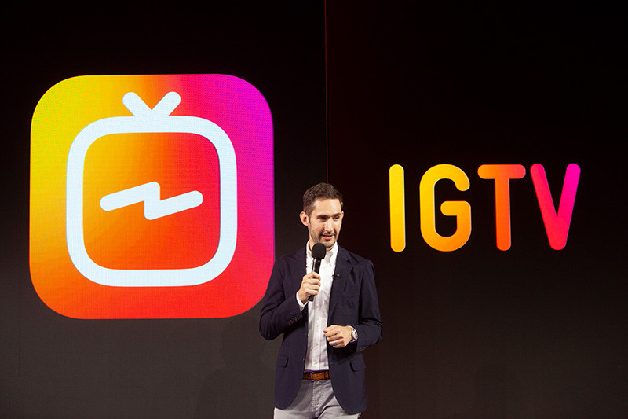
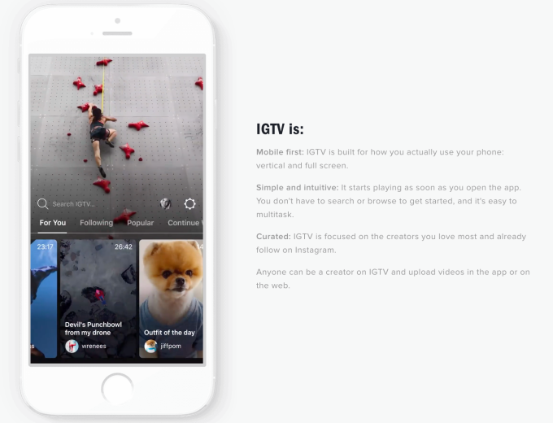
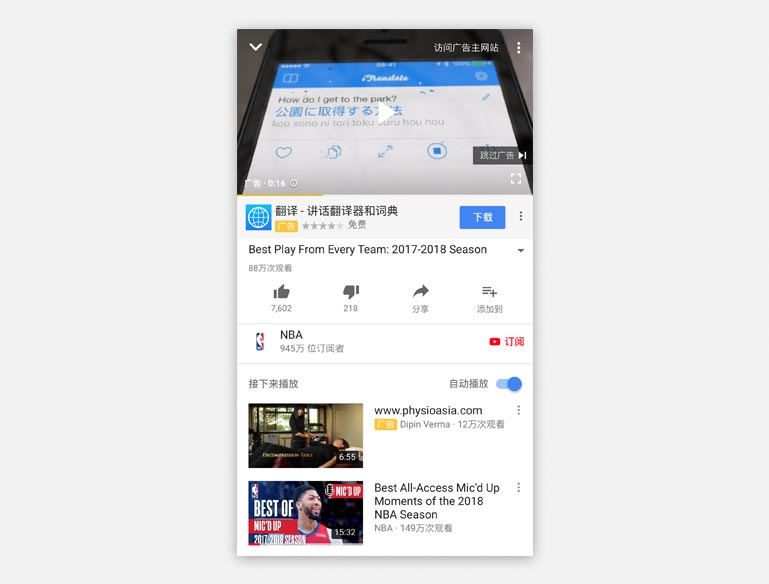
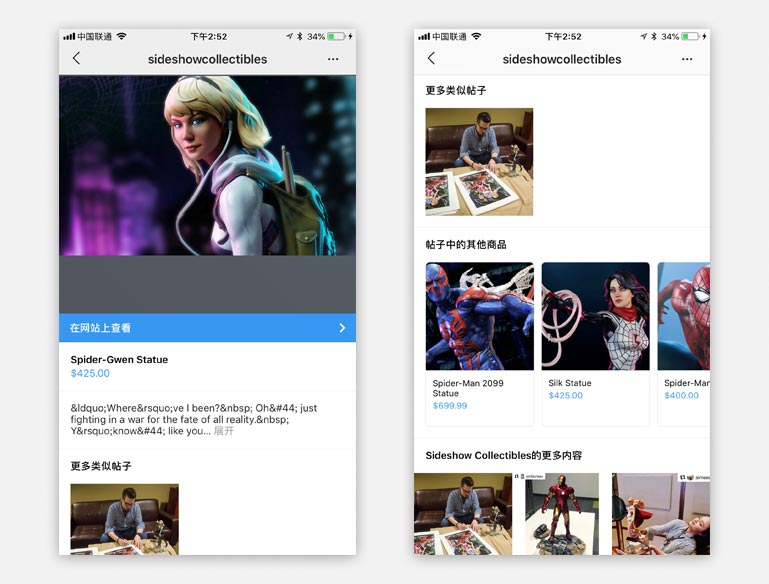
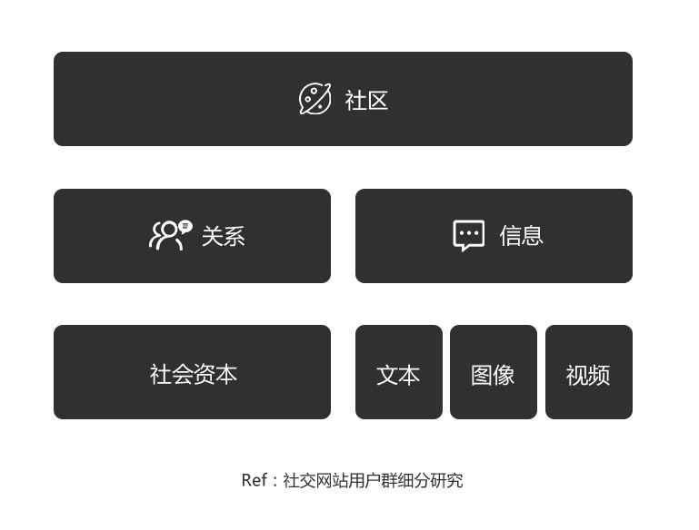
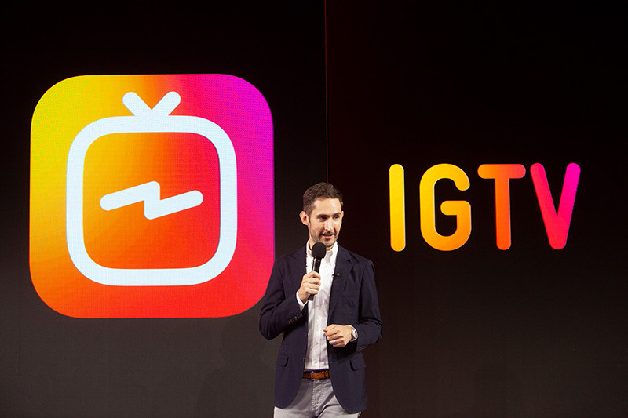
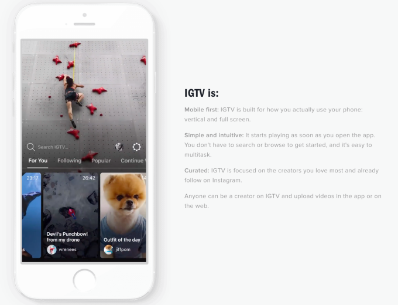
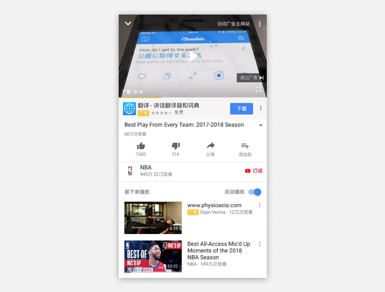
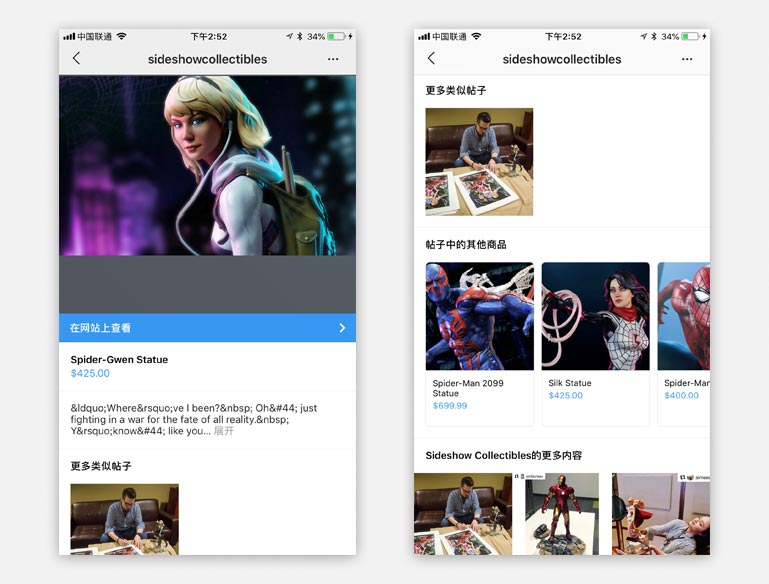
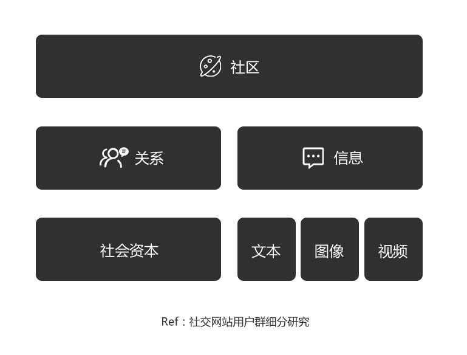

INS:欢迎使用IGTV
mark | 谢晓聪 | 2018-07-06
在6月22日，我打开Instagram后发现了一个醒目的引导气泡，也就是headbar右上角的一个类似小电视的图标。打开后发现这里收看各类视频账号的内容。后来得知原来这是Instagram在6月20时正式宣布“伸手”长视频的市场。
 图为Kevin Systrom在IGTV的发布会上
#IGTV是什么？#
IGTV目前可以让任何人都能在此平台上上传10分钟以上的视频媒体内容（而Instagram限制最大只能上传10分钟的视频媒体内容），优秀的创作者甚至可以获得上传60分钟视频媒体内容的权限。这样下来我们基本就能清晰的知道IGTV的定位—有别于Ins短平快型内容以外的长视频内容消费平台。
 图为IGTV官方宣传介绍
IGTV能发挥你移动设备的优势—垂直&全屏消费内容；
简单易懂的概念模型，不用借助搜索就能开始内容的探索和消费（因为IGTV是以“人”为内容偏好进行优先消费的框架）；
IGTV更聚焦于那些优质的创造者；
#所以竞争对手是YouTube？#
“YouTube对我来说，是主要的内容曝光平台。” Marques Brownlee（油管的电子产品测评博主）说。“在YouTube上上传的版本是经过精心剪裁、编辑以及调校过的高质量版本内容……但是我觉得我在视频制作的幕后内容可能会在其他平台上出现，比如Twitter或Instagram。”
YouTube：目标内容是精心编辑制作的（专业编辑器），规范的高质量（拍摄仪器）幕前主流内容。
IGTV：目标内容是偏个性化，随意且贴近生活，时效性强的编辑成本低且拍摄成本低的幕后/生活化的内容。
所以同一个优秀创作者的内容完全可以基于不同的使用场景，将自己的内容进行不同平台的曝光——来满足消费者不同消费阶段/场景的需求。严格意义上来说IGTV和YouTube是互补的，而不是对立的（暂时是这样的）。
#Instagram为什么现在会需要IGTV？#
商业模式：如果单单仅用商业广告投放的计算方式来算的话，我们可以参考：ROI=（单个用户广告ROI值x用户总量-运营成本）/成本*100% 。其次我们考虑长视频的广告容忍度是高于短视频以及图文内容的；从Instagram公布用户量达到10亿时，可以遇见未来这个战场的价值。
 图为YouTube的广告媒体投放
从产品的模式来分析，对比youtube或者短视频社区，当信源、信道、信宿都是相同时，IGTV是以检索用户为编码/解码行为。那么，从本质上是以人为媒体目标对象，而不再是以检索关键词为媒体目标对象。那么从影响广告效果的媒体因素考虑时，IGTV的质化因素会优于其他平台。
 图为Instagram的广告媒体投放以及应用案例
Instagram 2018年在美国的广告收入将达到54.8亿美元，较去年增长70%。据报道，Instagram占Facebook移动广告收入的28.2%。IGTV可能会带来多于传统电视广告主期望的高端移动广告库存。这刺激Facebook的股价上涨了2.2%，至202美元。
社区内容的趋势：我们可以分析下内容型社区的本质是什么—关系和信息；关系向下拆解可以看成用户在社区内的社会资本，社会资本越高的用户，对周围影响力越大，信息传播效率越高，同时也对平台的依赖度越大；而信息则是在社区网络中传播的元素—文本，图像，短视频，长视频则是元素载体。
 社区模型拆解
不同载体的信息针对的消费场景却不太一样，但本质都是找到合适的方式提升用户获取信息的效率。效率越高即代表连通性越大，信源（内容输出者）越偏好此类型的信息载体进行创作。这样才有助于帮助信源拓展社会资本。所以，社区内容发展的趋势一定是顺应着信息传输效率以及往多元化进行拓展的，这样不同类型的用户可以针对自己的偏好提升信息的获取/传输效率。IGTV很好的迎合了INS上的内容输出者和内容消费者。
Ref：信源一词取自信息论，社会资本取自《社交网站用户群细分研究》；

 图为Kevin Systrom在IGTV的发布会上
#IGTV是什么？#
IGTV目前可以让任何人都能在此平台上上传10分钟以上的视频媒体内容（而Instagram限制最大只能上传10分钟的视频媒体内容），优秀的创作者甚至可以获得上传60分钟视频媒体内容的权限。这样下来我们基本就能清晰的知道IGTV的定位—有别于Ins短平快型内容以外的长视频内容消费平台。
 图为IGTV官方宣传介绍
#所以竞争对手是YouTube？#
“YouTube对我来说，是主要的内容曝光平台。” Marques Brownlee（油管的电子产品测评博主）说。“在YouTube上上传的版本是经过精心剪裁、编辑以及调校过的高质量版本内容……但是我觉得我在视频制作的幕后内容可能会在其他平台上出现，比如Twitter或Instagram。”
所以同一个优秀创作者的内容完全可以基于不同的使用场景，将自己的内容进行不同平台的曝光——来满足消费者不同消费阶段/场景的需求。严格意义上来说IGTV和YouTube是互补的，而不是对立的（暂时是这样的）。
#Instagram为什么现在会需要IGTV？#
 图为YouTube的广告媒体投放
从产品的模式来分析，对比youtube或者短视频社区，当信源、信道、信宿都是相同时，IGTV是以检索用户为编码/解码行为。那么，从本质上是以人为媒体目标对象，而不再是以检索关键词为媒体目标对象。那么从影响广告效果的媒体因素考虑时，IGTV的质化因素会优于其他平台。
 图为Instagram的广告媒体投放以及应用案例
Instagram 2018年在美国的广告收入将达到54.8亿美元，较去年增长70%。据报道，Instagram占Facebook移动广告收入的28.2%。IGTV可能会带来多于传统电视广告主期望的高端移动广告库存。这刺激Facebook的股价上涨了2.2%，至202美元。
 社区模型拆解
不同载体的信息针对的消费场景却不太一样，但本质都是找到合适的方式提升用户获取信息的效率。效率越高即代表连通性越大，信源（内容输出者）越偏好此类型的信息载体进行创作。这样才有助于帮助信源拓展社会资本。所以，社区内容发展的趋势一定是顺应着信息传输效率以及往多元化进行拓展的，这样不同类型的用户可以针对自己的偏好提升信息的获取/传输效率。IGTV很好的迎合了INS上的内容输出者和内容消费者。
Ref：信源一词取自信息论，社会资本取自《社交网站用户群细分研究》；
562820976@qq.com | 联系